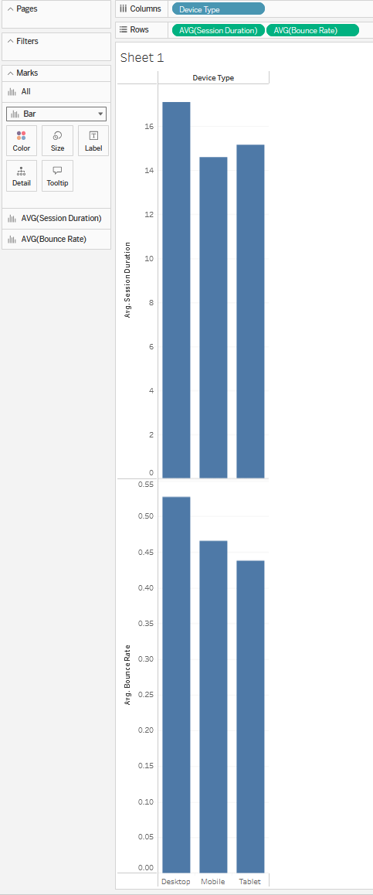
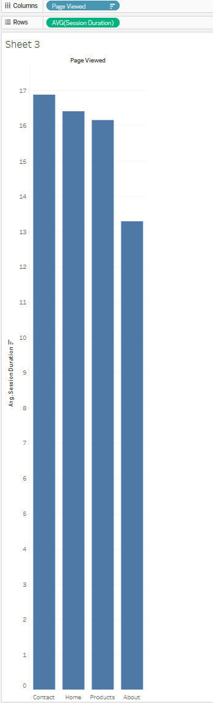
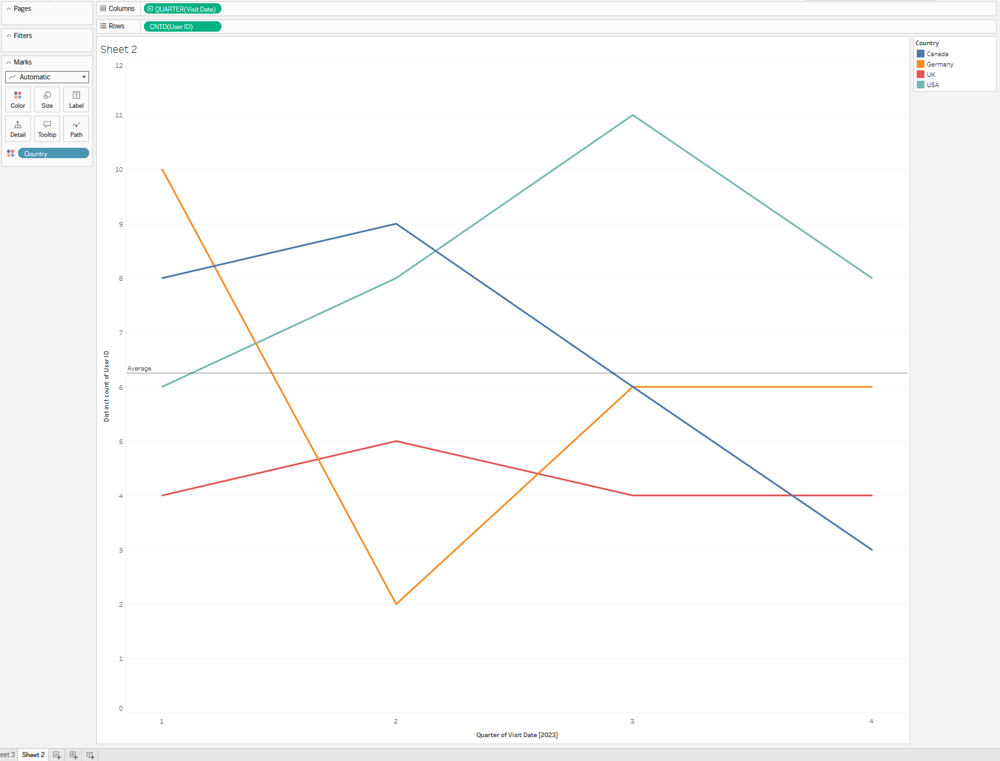

WebTrends Photo Gallery

This shows us the average Session Duration and Bounce Rate by Device Type

Gives us the average Session Duration by Page.

This shows the traffic Trends over time by country, average line for comparison to show busy/slow months.
This is a Link to the Tableau Publication of the same Work!
Click Here